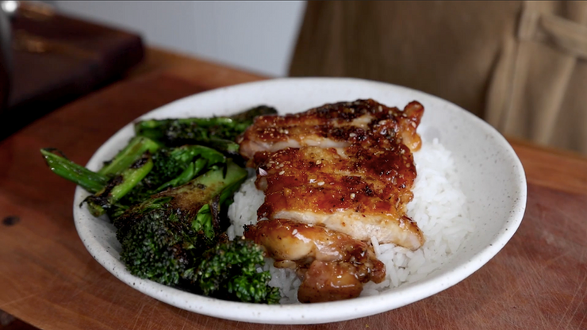

Teriyaki Chicken

Description
This dish comes from Pro Home Cooks. It's recommended as a relatively beginner friendly recipe that all home cooks should know. It will teach you fundamental techniques like making your own sauce, frying skin-on chicken thighs, and making rice perfectly. Further, the final product is just delicious. Who doesn't love teriyaki chicken?
Ingredients
Teriyaki Sauce
- 1 knob of ginger
- 2 cloves of garlic
- 2 tablespoons of oil
- 1 cup of sake
- 1 cup of mirin
- 1 cup of soy sauce
- 2 tablespoon cornstarch
- 4 tablespoon water
- 1 tablespoon of sesame seeds
Chicken Teriyaki
- 1 pound of chicken thighs, preferred boneless skin on
- salt and pepper to taste
- 1 head of brocollini
Perfect Fluffy White Rice
- 1 cup of rice
- 1 cup of water
Steps
Teriyaki Sauce
- Start by peeling your ginger and garlic. Chop the aromatics into very fine pieces.
- Next, drizzle in 1 tablespoon of oil and drop in your finely chopped garlic and ginger. On low heat, let the garlic and ginger bloom and become fragrant.
- After about 3 minutes, add in equal parts of sake, mirin, and soy sauce. Bring to a boil and let the alcohol cook off. This will take about 5 minutes on medium heat.
- Once the sauce has reduced by about 1/3, mix together the corn starch and water in a small bowl.
- Drizzle in your corn starch slurry and give it a mix. Your teriyaki sauce should become nice and thick.
- Finally add in about 1 tablespoon of sesame seeds. Stir to combine and once the sauce is cooled store in an air tight jar. Keep in the fridge until you are ready to use!
Chicken Teriyaki
- Salt and pepper the chicken thighs and let them sit for 30 minutes or preferred overnight and in the fridge if possible.
- In a cold pan, place your chicken skin side down, and turn the heat to medium. Let the chicken fat render and get nice and crispy.
- In the mean time, cut up your broccolini or veggie of choice.
- Once your chicken skin is golden brown and crispy, flip it over to do the same to the other side. Once the chicken is nice and golden brown all around take it out and set it aside.
- Drop in your chopped up broccolini and let that sear in the chicken fat. Once it nice and a little crispy and vibrant in color, take it out.
- Dunk your chicken into the the teriyaki sauce. Slice it up and serve with some fluffy rice and seared broccolini.
Perfect Fluffy White Rice
- Start by washing the rice until the water runs clear, about 3 -4 times is good. Then add the washed rice into a pot and add 1 cup of water.
- With the cover off, turning the heat to high. Once you start to some gentle bubbles, turn the heat to low, cap it, and set your timer for 15 minutes.
- Once it's done, shut it off and let it steam for 5 minutes or until you are ready to serve your dish. When you are ready to serve, take a fork, and fluff your rice.